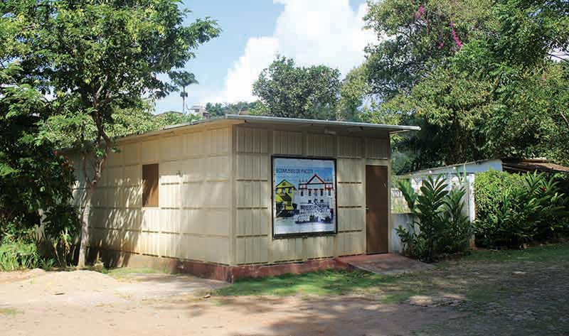
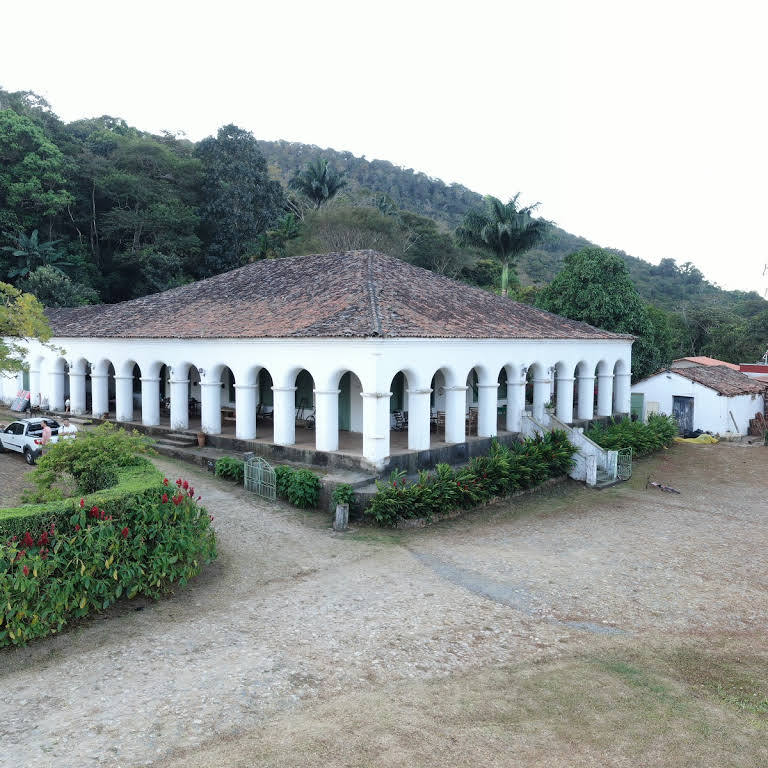

Informações técnicas sobre relevo, população, IDH etc.
| INFORMAÇÕES | |
|---|---|
| Municípios limítrofes | Norte: Palmácia; Sul: Guaramiranga; Leste: Redenção; Baturité; Oeste: Caridade |
| Fundação | 2 de setembro de 1890 (130 anos) |
| Área total | 111,959 km² |
| Clima | Tropical subquente úmido |
| IDH | 0,668 — médio |
| PIB | R$ 114,458 mil |
| INFORMAÇÕES TERRITORIAIS | |
|---|---|
| Número de habitantes | 12 261 habitantes |
| Superfície de Pacoti |
10 959 hectares
109,59 km² |
| Densidade populacional | 111,9 ha./km² |
| Altitude de Pacoti | 742 metros de altitude |
| Coordenadas geográficas decimais |
Latitude:
-4.2246
Longitude: -38.9254 |
| Coordenadas geográficas sexagesimais | Latitude: 4° 13' 29'' Sul , Longitude: 38° 55' 31'' Oeste |
| INFORMAÇÕES DO MUNICÍPIO | |
|---|---|
| Endereço da Prefeitura Municipal de Pacoti |
Pacoti
Prefeitura de Pacoti
Av. Coronel José Cícero Sampaio, 663 PACOTI - CE, 62770-000 Brasil |
| Telefone da prefeitura |
(85) 3325-1410
Internacional: +55 85 3325-1410 |
| Fax |
(85) 3325-1399
Internacional: +55 85 3325-1399 |
| Endereço electrónicoda prefeitura |
pmpfin@aol.com
|
| Site oficial do município | pacoti.ce.gov.br |
| INFORMAÇÕES ADMINISTRATIVAS | ||
|---|---|---|
| Prefeito de Pacoti | Francisco Jose Sampaio Leite | |
| Partido politico | PV | |
| INFORMAÇÕES DE TRANSPORTE | |
|---|---|
| Transporte urbano disponível | Não disponível |
| Aeroporto |
Aeroporto Internacional Pinto Martins 66.3 km
Aeroporto de Sobral
168.1 km
Aeroporto Dix-Sept Rosado
204.5 km
|
| INFORMAÇÕES DE DISTÂNCIA A OUTRAS CIDADES | ||
|---|---|---|
| São Paulo : 2305 km | Rio de Janeiro : 2130 km | Brasília : 1620 km |
| Salvador : 975 km | Belo Horizonte : 1819 km | Manaus : 2347 km |
| Curitiba : 2607 km | Fortaleza : 71 km mais perto | Goiânia : 1788 km |
| Belém : 1108 km | Porto Alegre : 3151 km | Guarulhos : 2284 km |
| Campinas : 2257 km | São Luís : 627 km | Recife : 618 km |
| Distância calculada em linha reta! | ||
Conheça mais sobre a história da Pacoti.
Somente dois séculos depois do descobrimento do Brasil, em 1680, o maciço de Baturité é alcançado pela primeira vez. Estevão Velho de Moura e mais seis rio-grandenses do norte conseguem do Capitão-mor Sebastião Sá uma extensão de terra sobre o rio Choró. Eram 126 quilômetros, alcançando grande parte da atual micro região de Baturité. Apesar disso, as terras do maciço continuaram sem uma efetiva ocupação até 1718, quando Manuel Duarte da Cruz ocupa a região atualmente denominada de Aracoiaba.
Vindos do sertão de Canindé, em 1738, Teodósio de Pina e Inácio Loiola Leitão ocupam a região da atual Aratuba. Em 1740, os irmãos Arnáu, Sebastião e Cristovão Holanda habitam temporariamente a serra e Manuel Ferreira da Silva resolve transferir-se em definitivo para a região. Os descendentes destes pioneiros são os responsáveis pelo povoamento inicial e hoje, muitos dos seu quintos e sextos netos ainda são proprietários de sítios em Aratuba, Guaramiranga, Mulungu e Pacoti. Ao iniciar-se o século XIX, todo o solo do maciço já possuía proprietários. Parte do maciço desenvolve a plantação de algodão e a região tem uma rápida expansão econômica. A cidade de Baturité transforma-se em ponto de convergência obrigatória de numerosos caminhos.
Os senhores mais abastados do sertão compravam sítios na serra, onde construíram casas provisórias para fugir das secas. Subiam em picadas com uns poucos animais de carga e algumas vacas para o leite. Passada a estiagem, não suportavam a umidade e o frio serrano e voltava ao sertão.
Saiba mais sobre os melhores lugares e o que fazer em Pacoti.
Entidade comunitária que nasceu da iniciativa transformadora de jovens ao explorar o território em que habitam.
Sítio São Luís Construída para romper os séculos e atravessar gerações, com sua arquitetura suave e imponente, a Casa do Sítio São Luís é herança visível dos tempos áureos do Café na Serra de Baturité. Pela narrativa dos proprietários, histórias contextualizadas na tradição do cultivo do café, no Ceará e no Brasil, são reveladas aos visitantes enquanto percorrem os ambientes da Casa.

Veja como chegar nos melhores pontos de Pacoti